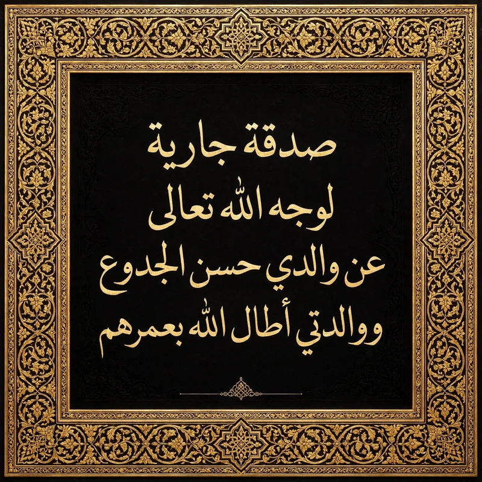

على الآيفون: الأذان الكامل يشتغل والصفحة مفتوحة. إذا أغلقت الصفحة يصلك تنبيه بوقت الصلاة، واضغط عليه ليشتغل الأذان كاملاً.
القرآن الكريم
جارٍ تحميل السور...
الأذكار والأدعية
جارٍ تحميل الأذكار...
اتجاه القبلة
—
—
وجّه أعلى الهاتف نحو السهم الذهبي
على الآيفون: اضغط «تفعيل البوصلة» ثم اسمح بالوصول لاتجاه الجهاز. بدون الإذن تظهر الزاوية فقط من الشمال.
راديو القرآن
اختر محطة للاستماع.
الموقع
المواقيت تُحسب بطريقة أمريكا الشمالية ISNA: الفجر 15°، العشاء 15°، والعصر شافعي. منطقة الوقت تُؤخذ من جهازك.
أوقات الجامع
أدخل أوقات جامعك الخمسة مرة واحدة، وسيُحفظ الفرق عن الحساب الفلكي ويُطبق كل يوم تلقائياً (نفس منطق مزامنة الجامع في تطبيق الأندرويد). اتركها فارغة لاستخدام الحساب فقط.
لا توجد أوقات جامع محفوظة.
الأذان
الأذان الكامل لا يشتغل من إشعار والهاتف مقفل على الآيفون — هذا حد من نظام iOS نفسه، وليس من التطبيق.
الإشعارات
الحالة: لم يُطلب الإذن بعد.
بصراحة، على الآيفون: يصلك تنبيه بوقت الصلاة، واضغط عليه ليشتغل الأذان كاملاً. التنبيه التلقائي والصفحة مغلقة يحتاج سيرفر Push، والسيرفر غير موجود بعد — هذه النسخة جاهزة لـ Push (Service Worker + اشتراك) والتنبيه الفوري يعمل والصفحة مفتوحة. لن ندّعي أن Push السيرفر يعمل قبل بنائه.
عن النسخة
نور الحق — نسخة الويب PWA 1.0. مواقيت، قرآن، أذكار، قبلة، راديو. تعمل أوفلاين بعد أول زيارة. مجانية وبلا إعلانات.
حول التطبيق

صدقة جارية لوجه الله تعالى عن والدي حسن الجدوع ووالدتي ختام الربيع أطال الله بعمرهم
نور الحق نسخة الويب 1.0
مجاناً وبدون إعلانات — كامل المزايا لوجه الله تعالى